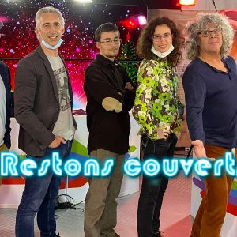

15 Juin 2021
Restons Couverts
Restons couverts est une émission émission de divertissement...
Dernière Diffusion
Diffusions précédentes
11 Juin 2021
Sommaire :
L’anniversaire de la Télé de l’Yonne !
Le quiz sur la vie sauvage de Florian
Le quiz sur les humoristes de Salomé
Le quiz sur l’Yonne de Yoanne
Et la culture des rizières au Japon par Bonap
08 Juin 2021
Sommaire :
Le quiz spécial théâtre de Salomé
L’application qui sépare les musiques en deux de Yoanne
La mémoire de Bonap
La mémoire de Bonap